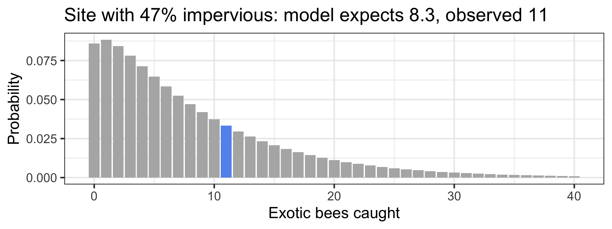

| Model | k | log L | AIC | ΔAIC |
|---|---|---|---|---|
| NB, 500 m | 3 | -117.3 | 240.5 | 0.0 |
| Poisson, 500 m | 2 | -183.7 | 371.4 | 130.8 |
Week 9: Comparing GLMs with information criteria
Fitch et al. measured impervious surface in circles of four sizes around each site: 500 m, 1 km, 1.5 km, and 2 km.
For linear regression, we measured fit with the residual sum of squares. GLMs use the likelihood.
Each site contributes the log of the probability the model assigns to its count.

This site contributes \(\log(0.033) = -3.40\). Add them up across all 41 sites to get \(\log L\) = -117.3.
\[ \text{AIC} = 2k - 2 \log L \]
| Model | k | log L | AIC | ΔAIC |
|---|---|---|---|---|
| NB, 500 m | 3 | -117.3 | 240.5 | 0.0 |
| Poisson, 500 m | 2 | -183.7 | 371.4 | 130.8 |
AIC values have no meaning on their own. Only differences between models fit to the same data matter.
| \(\Delta\)AIC | Support for the model (relative to the best) |
|---|---|
| 0 – 2 | Substantial: about as good as the best |
| 4 – 7 | Considerably less |
| > 10 | Essentially none |
Rule of thumb from Burnham & Anderson (2002). These are guidelines, not significance thresholds.
| Model | k | log L | AIC | ΔAIC |
|---|---|---|---|---|
| NB, 500 m | 3 | -117.3 | 240.5 | 0.0 |
| NB, 1 km | 3 | -117.3 | 240.6 | 0.1 |
| NB, 1.5 km | 3 | -118.5 | 243.0 | 2.5 |
| NB, 2 km | 3 | -119.9 | 245.7 | 5.2 |
| NB, intercept only | 2 | -126.5 | 257.1 | 16.5 |
Sites were surveyed in two different years. Does accounting for year help?
| Model | k | log L | AIC | ΔAIC |
|---|---|---|---|---|
| NB, 500 m + year | 4 | -111.0 | 230.0 | 0.0 |
| NB, 500 m | 3 | -117.3 | 240.5 | 10.5 |
One more parameter (+2 penalty) but 6.3 more log-likelihood. Year earns its place.
| Model | k | ΔAIC | ΔAICc | ΔBIC |
|---|---|---|---|---|
| NB, 500 m + year | 4 | 0.0 | 0.0 | 0.0 |
| NB, 500 m | 3 | 10.5 | 10.1 | 8.8 |
| NB, 1 km | 3 | 10.6 | 10.2 | 8.9 |
| NB, 1.5 km | 3 | 13.0 | 12.5 | 11.3 |
| NB, 2 km | 3 | 15.8 | 15.3 | 14.0 |
| NB, intercept only | 2 | 27.1 | 26.3 | 23.7 |
| Poisson, 500 m | 2 | 141.4 | 140.6 | 138.0 |
Here, the ranking is the same either way. When criteria disagree, it’s a sign the evidence is weak.
NAs in one predictor silently drop rows from that model onlylm(log(y) ~ x) with glm(y ~ x, family = Gamma) using R’s default outputquasipoisson) don’t have one, so no AICWhat does the likelihood measure?
The probability of the observed data under the model. Higher \(\log L\) = better fit.
What is AIC?
\(2k - 2\log L\): fit, penalized for the number of parameters. Lower is better; only differences matter.
What can AIC compare that F-tests can’t?
Non-nested models, like different predictors or different families.
What are the rules?
Same data, same response scale, real likelihood. Use AICc for small samples. AIC ranks models; it doesn’t validate them.
Burnham, K. P., & Anderson, D. R. (2002). Model Selection and Multimodel Inference: A Practical Information-Theoretic Approach (2nd ed.). Springer.
Fitch, G., Wilson, C. J., Glaum, P., Vaidya, C., Simao, M.-C., & Jamieson, M. A. (2019). Does urbanization favour exotic bee species? Implications for the conservation of native bees in cities. Biology Letters, 15(12), 20190574. https://doi.org/10.1098/rsbl.2019.0574